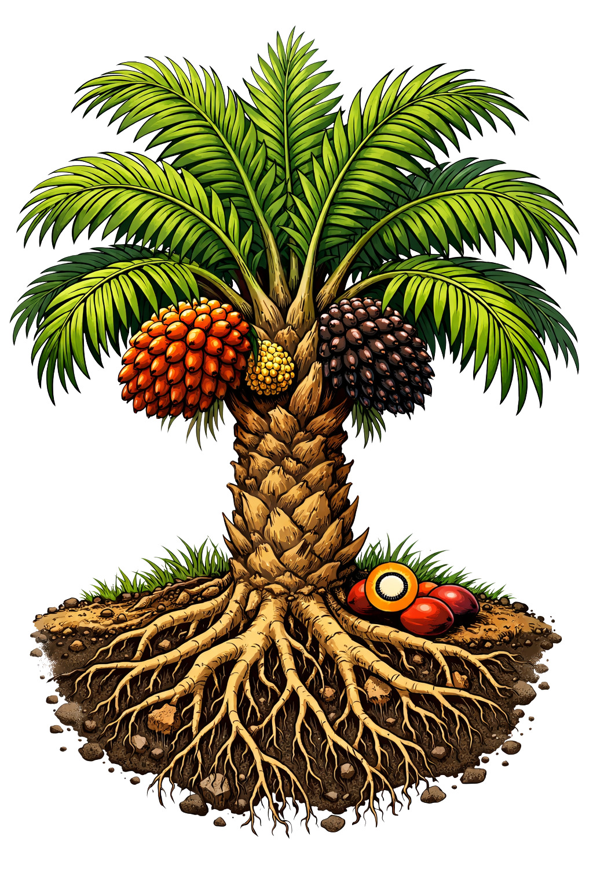

Pelepah ✦Frond ✦
TandanBunch
BuahFruit
BatangTrunk
TanahSoil
AkarRoot
👆 Klik 6 bagian pohon untuk info lengkap
👆 Click 6 parts of the tree for full info
Pohon Kelapa Sawit
Oil Palm Tree
Klik 6 bagian pohon sawit untuk mempelajari anatomi dan komposisinya secara mendalam.
Click the 6 parts of the oil palm tree to study its anatomy and composition in depth.
Klik Pelepah ✦ — komposisi lignoselulosa
Click Frond ✦ — lignocellulosic composition
Klik Tandan — struktur tandan buah segar
Click Bunch — fresh fruit bunch structure
Klik Buah — kandungan & rendemen minyak
Click Fruit — oil content & yield
Klik Batang — fungsi struktural & vaskular
Click Trunk — structural & vascular function
Klik Tanah — kondisi ideal pertumbuhan sawit
Click Soil — ideal palm growth conditions
Klik Akar — sistem perakaran sawit
Click Root — palm rooting system
Komposisi · Lignoselulosa
Composition · Lignocellulose
Pelepah Sawit
Palm Frond
Pelepah sawit merupakan biomassa lignoselulosa yang melimpah dan berpotensi besar sebagai bahan baku bioenergi serta material karbon.
Palm fronds are an abundant lignocellulosic biomass with great potential as a raw material for bioenergy and carbon materials.
🌿 PALM FRONDS — 3 LARGEST CONSTITUENT COMPOUNDS
Cellulose31.5%
Polimer glukosa linier — penyusun dinding sel utama
Linear glucose polymer — main cell wall constituent
Hemicellulose19.20%
Polimer heterogen — mengikat selulosa & lignin
Heterogeneous polymer — binds cellulose & lignin
Lignin14%
Polimer aromatik — memberikan rigiditas struktural
Aromatic polymer — provides structural rigidity
📚 Sumber: Zikri et al., 2025
📚 Source: Zikri et al., 2025
✅ Sampel tersimpan di Tas Sampel — Siap untuk tahap Karbonisasi
✅ Sample stored in Sample Bag — Ready for Carbonization stage
Struktur · Reproduksi
Structure · Reproduction
Tandan Buah Segar
Fresh Fruit Bunch
Tandan Buah Segar (TBS) adalah unit hasil panen utama kelapa sawit. Tandan terbentuk dari rachis (sumbu utama) yang bercabang menjadi rachillae, tempat buah menempel secara spiral.
Fresh Fruit Bunch (FFB) is the main harvested unit of oil palm. The bunch is formed from a rachis (main axis) branching into rachillae, where fruits are attached spirally.
10–40 kg
Berat per Tandan
Weight/Bunch
8–12
Tandan/Pohon/Tahun
Bunches/Tree/Year
1.000–3.000
Buah per Tandan
Fruits/Bunch
5–6 bln
Waktu Kematangan
Maturation Time
Setiap rachillae mengandung buah betina yang jika terserbuki menghasilkan CPO dari mesokarp dan PKO dari inti biji.
Each rachilla contains female fruits which, if pollinated, produce CPO from the mesocarp and PKO from the kernel.
Produksi · Ekonomi
Production · Economy
Buah Sawit
Palm Fruit
Buah sawit (drupa) memiliki tiga lapisan: eksokarp (kulit luar), mesokarp (daging buah kaya minyak), dan endokarp (cangkang keras pelindung inti/kernel).
Palm fruit (drupe) has three layers: exocarp (outer skin), mesocarp (oil-rich pulp), and endocarp (hard shell protecting the kernel).
20–22%
Rendemen CPO
CPO Yield
4–6%
Rendemen PKO
PKO Yield
β-Carotene
Antioksidan Utama
Main Antioxidant
Vit. E
Tokoferol & Tokotrienol
Tocopherol & Tocotrienol
Satu ton TBS menghasilkan rata-rata 200–230 kg CPO dan 45–55 kg PKO. CPO kaya asam palmitat (44%), asam oleat (39%), serta karotenoid alami.
One ton of FFB produces an average of 200–230 kg of CPO and 45–55 kg of PKO. CPO is rich in palmitic acid (44%), oleic acid (39%), and natural carotenoids.
Anatomi · Struktural
Anatomy · Structural
Batang Sawit
Palm Trunk
Batang pohon sawit adalah struktur monopodia silindris tegak berfungsi sebagai penyangga mahkota dan jalur transportasi hara. Bekas pelepah yang gugur membentuk pola cincin khas.
The palm trunk is an erect cylindrical monopodial structure serving as crown support and nutrient transport pathway. Fallen frond scars form a distinct ring pattern.
20–30 m
Tinggi Maksimal
Max Height
25–45 cm
Diameter Batang
Trunk Diameter
40+ thn
Usia Produktif
Productive Age
Berkas
Vaskular Tersebar
Scattered Vascular
Batang mengandung banyak berkas pembuluh (vascular bundle) yang mengangkut air, mineral, dan fotosintat. Tidak ada kambium sehingga tidak terjadi pertumbuhan sekunder.
The trunk contains many vascular bundles that transport water, minerals, and photosynthates. There is no cambium, hence no secondary growth occurs.
Pedologi · Lingkungan
Pedology · Environment
Tanah Perkebunan Sawit
Palm Plantation Soil
Kelapa sawit tumbuh optimal pada tanah latosol, podsolik merah-kuning, dan gambut dangkal. Tanah harus memiliki drainase lancar namun mampu menahan kelembapan yang cukup.
Oil palm grows optimally in latosol, red-yellow podzolic, and shallow peat soils. The soil must have good drainage but be able to retain sufficient moisture.
4.0–6.5
pH Tanah Optimal
Optimal Soil pH
>60 cm
Kedalaman Efektif
Effective Depth
2.000 mm
Curah Hujan/Tahun
Rainfall/Year
25–28 °C
Suhu Rata-rata
Avg Temperature
Lapisan topsoil (0–30 cm) kaya bahan organik untuk nutrisi awal. Lapisan subsoil mendukung penjangkaran akar dan menampung cadangan air saat musim kering.
The topsoil layer (0–30 cm) is rich in organic matter for initial nutrition. The subsoil layer supports root anchorage and holds water reserves during the dry season.
Sistem Perakaran
Root System
Akar Sawit
Palm Root
Sistem perakaran sawit bersifat serabut (fibrous) dengan akar primer, sekunder, tersier, dan kuartener yang menyebar luas secara lateral maupun vertikal di bawah permukaan tanah.
The palm root system is fibrous with primary, secondary, tertiary, and quaternary roots spreading widely both laterally and vertically below the soil surface.
4–5 m
Jangkauan Lateral
Lateral Reach
1–1.5 m
Kedalaman Efektif
Effective Depth
Ordo 1–4
Tingkatan Akar
Root Orders
80%
Akar di 0–30 cm
Roots at 0–30 cm
Sebagian besar akar aktif (tersier & kuartener) terkonsentrasi di lapisan 0–30 cm. Akar pneumatofora membantu aerasi pada lahan gambut. Kerapatan akar berkurang seiring bertambahnya kedalaman.
Most active roots (tertiary & quaternary) are concentrated in the 0–30 cm layer. Pneumatophore roots help aeration in peatlands. Root density decreases with depth.